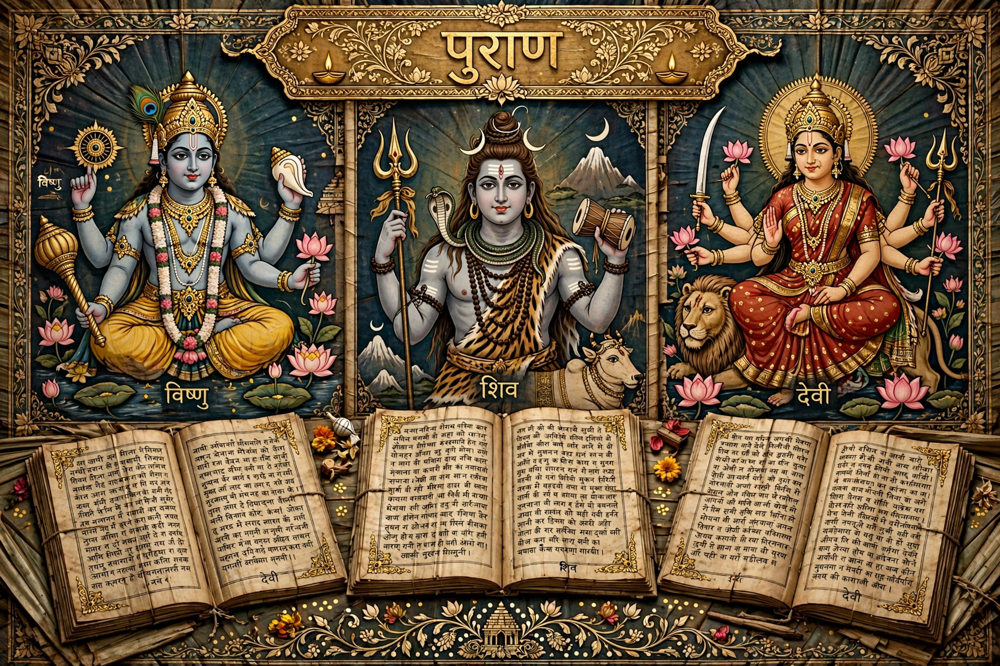

The Puranas (Sanskrit: पुराण, purāṇa, "ancient, old") are a vast genre of Indian literature in Hinduism, Jainism and Buddhism — encyclopedic texts covering cosmology, mythology, legends, genealogy of gods and kings, geography, medicine, astronomy and theology.

Tradition lists eighteen major Puranas: Vishnu, Bhagavata, Naradiya, Garuda, Padma, Varaha (Vaishnava); Matsya, Kurma, Linga, Shiva, Skanda, Agni (Shaiva); and Brahma, Brahmanda, Brahmavaivarta, Markandeya, Bhavishya, Vamana (Brahma/Shakta groupings vary). The Bhagavata Purana is among the most influential, central to Krishna devotion.
A Purana is traditionally said to have pancha-lakshana: primary creation (sarga), secondary creation (pratisarga), genealogies of gods and sages (vamsha), cosmic cycles (manvantara), and dynastic histories (vamshanucharita).
Puranas shaped temple worship, festivals, pilgrimage (tirtha) geography, and popular Hindu narrative for over a millennium, transmitting stories of Vishnu, Shiva, Devi, Krishna and Rama in accessible Sanskrit verse, typically framed as dialogues.
Vedas · Upanishads · Mahabharata · Itihasa